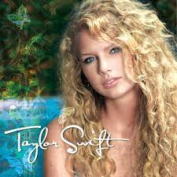
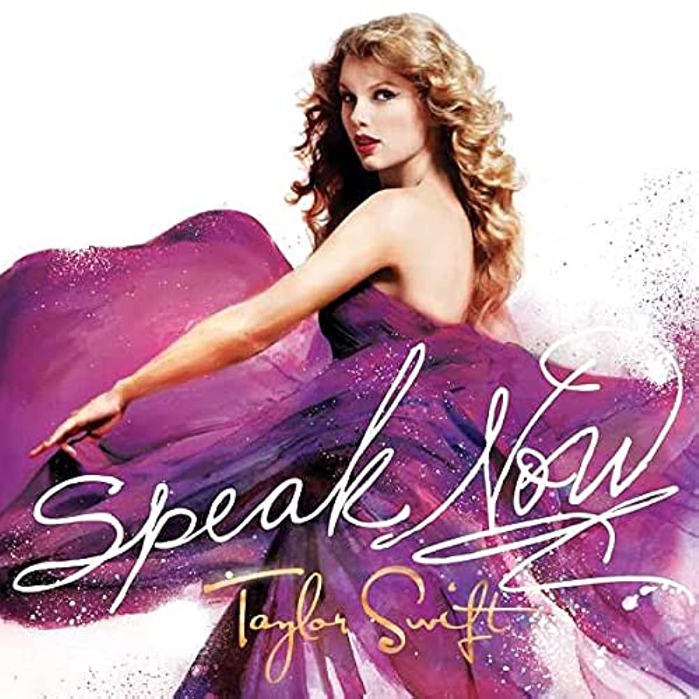
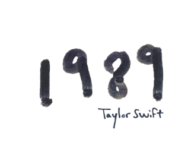
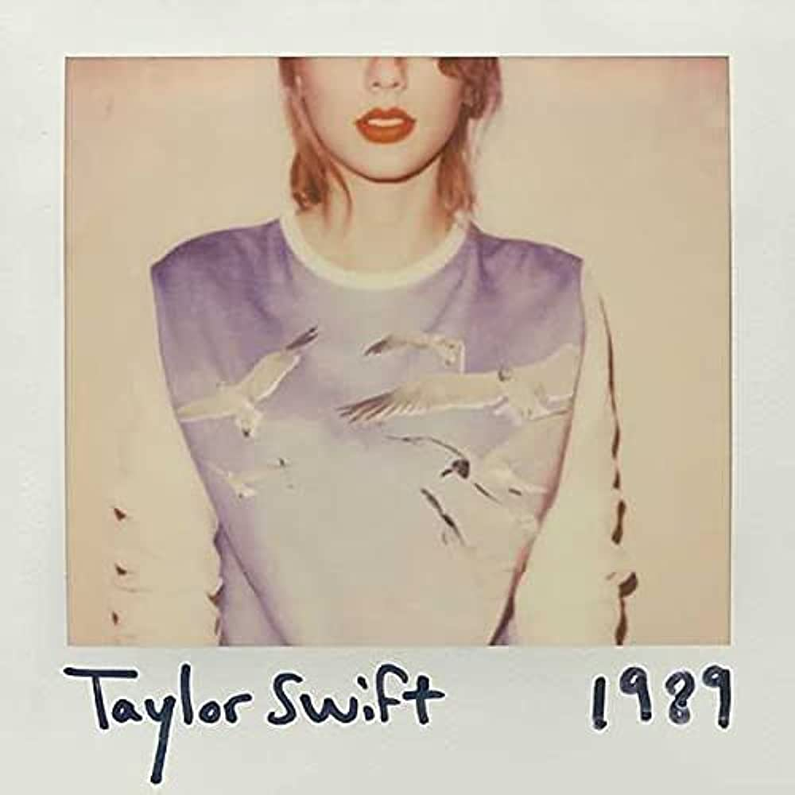

Taylor Alison Swift (Reading, 13 de dezembro de 1989) é uma cantora, compositora, atriz, diretora e roteirista norte-americana. Suas composições narrativas, muitas vezes inspirada pelas suas experiências pessoais, tem recebido ampla cobertura mediática e elogios críticos. Swift mudou-se para Nashville aos 14 anos de idade para se tornar uma cantora de música country, assinando um contrato de composição com a Sony/ATV Music Publishing em 2004 e um contrato de gravação com a Big Machine Records em 2005.
O álbum foi promovido através de performances nas turnês de artistas country como "George Strait", "Brad Paisley", "Tim McGraw" e "Faith Hill", além de ter feito performances de várias faixas do disco durante sua primeira turnê mundial, a Fearless Tour (2009–10). Outras diversas apresentações foram feitas pela artistas em programas de televisão como Good Morning America e America's Got Talent, além de participações na programação de estações de rádio. Durante a Fearless Tour, Swift performou os maiores sucessos

Taylor Swift foi lançado no dia 24 de outubro de 2006 com onze faixas. Swift esteve bastante envolvida na criação da embalagem do álbum, já que ela mesma desenhou rabiscos de gráficos. Lançado pela gravadora Big Machine Records.
As canções possuem como temática lírica relacionamentos vivenciados por Swift e por pessoas próximas a ela, e foram escritas pela cantora a partir de seus 12 anos de idade.
Fearless é o segundo álbum de estúdio da artista musical americana Taylor Swift, lançado no dia 11 de novembro de 2008 através da Big Machine Records. Produzido ao longo de 2007 e 2008 e regravado em 2021.
As letras evocam temas como o amor adolescente, a rejeição e a autocapacitação, aliadas a cenários referentes a contos de fadas.

Speak Now é o terceiro álbum de estúdio da cantora e compositora estadunidense Taylor Swift, lançado no dia 25 de outubro de 2010 através da Big Machine Records e do Universal Music Group. O disco foi divulgado dois anos depois do álbum Fearless (2008), um grande sucesso de vendas por parte de Swift. O trabalho foi incluído na lista dos cinquenta melhores álbuns femininos de todos os tempos compilada pela Rolling Stone em 2012;
O quarto álbum de estúdio da cantora e compositora estadunidense Taylor Swift, lançado pela gravadora Big Machine Records no dia 22 de outubro de 2012. O lançamento do disco foi anunciado através de um webchat realizado por Swift no dia 13 de agosto do mesmo ano. Red foi bem recebido pelo público e pela crítica, obtendo índices de venda e de aprovação da crítica bastante positivos.


1989 é o quinto álbum de estúdio da artista musical americana Taylor Swift, lançado em 27 de outubro de 2014, através da gravadora Big Machine. Inicialmente, o álbum foi comercializado somente nos formatos físico e digital, não sendo disponibilizado em serviços de streaming, uma decisão vinda da própria artista. O título foi inspirado no ano de nascimento da artista e pela cena musical da década.
É o sexto álbum de estúdio da artista musical americana Taylor Swift, lançado em 10 de novembro de 2017, através da gravadora Big Machine. taylor se envolveu em disputas altamente divulgadas com várias celebridades e tornou-se constantemente alvo de escrutínio em tablóides. Inspirada na série de fantasia Game of Thrones , ela dividiu o escopo lírico do álbum em dois: um é sobre as desvantagens da fama e a raiva resultante, e o outro sobre o amor em meio ao tumulto.
Lover é o sétimo álbum de estúdio da artista musical americana Taylor Swift. O seu lançamento ocorreu em 23 de agosto de 2019, através da Republic Records. Após o lançamento de seu álbum anterior Reputation (2017), descrito como um "mecanismo de defesa" para lidar com a experiência tumultuosa de sua vida pública.
Oitavo álbum de estúdio da artista musical estadunidense Taylor Swift, lançado em 24 de julho de 2020 pela Republic Records. Swift desenvolveu Folklore em quarentena durante a pandemia de COVID-19.
Sendo um notável afastamento dos trabalhos anteriores de Swift, Folklore consiste em baladas suaves conduzidas por instrumentos neoclassicismo, seguindo os estilos de indie folk, electro-folk e rock alternativo.
O nono álbum de estúdio da cantora e compositora estadunidense Taylor Swift. O seu lançamento ocorreu em 11 de dezembro de 2020, através da gravadora Republic Records, menos de cinco meses após Folklore, seu oitavo álbum de estúdio.
A narrativa impressionista e a mitopoeia dominam sua técnica lírica. O assunto foi descrito como uma antologia de histórias sobre amor, casamento, infidelidade e luto, explorando as complexidades da emoção humana.
Midnights é o décimo álbum de estúdio da cantora e compositora estadunidense Taylor Swift, lançado em 21 de outubro de 2022, através da Republic Records. Foi anunciado no MTV Video Music Awards de 2022, marcando o primeiro corpo de novo trabalho de Swift desde seus álbuns de folk alternativo de 2020, Folklore e Evermore.
Midnights é um álbum conceitual que explora reflexões noturnas inspirada pelas "noites de insônia" de Swift e aborda temas como ansiedade, insegurança, autocrítica, autoconsciência, insônia e autoconfiança, utilizando letras confessionais e ao mesmo tempo enigmáticas.


.jpg)